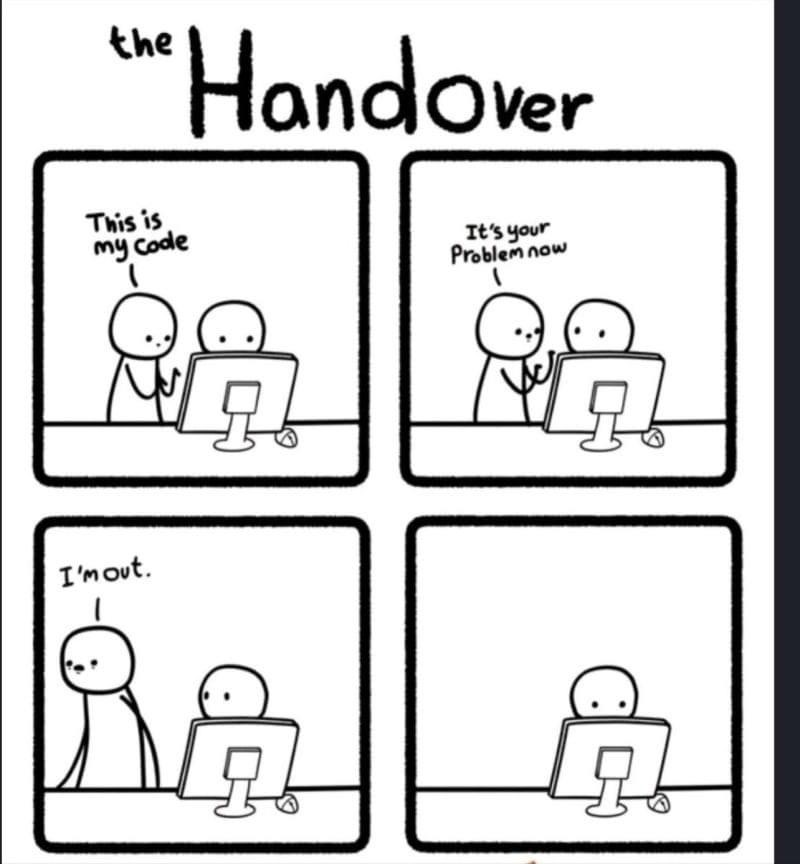

Preserve your code
Making your code readable
It is important to make your code easy to read if you hope that others will reuse it. It starts with using a consistent style withing your scripts (at least within a project).
- Here is a good style guide for R: https://style.tidyverse.org/
- Style guide for Python: https://www.python.org/dev/peps/pep-0008/
import thisThe Zen of Python, by Tim Peters
Beautiful is better than ugly.
Explicit is better than implicit.
Simple is better than complex.
Complex is better than complicated.
Flat is better than nested.
Sparse is better than dense.
Readability counts.
Special cases aren't special enough to break the rules.
Although practicality beats purity.
Errors should never pass silently.
Unless explicitly silenced.
In the face of ambiguity, refuse the temptation to guess.
There should be one-- and preferably only one --obvious way to do it.
Although that way may not be obvious at first unless you're Dutch.
Now is better than never.
Although never is often better than *right* now.
If the implementation is hard to explain, it's a bad idea.
If the implementation is easy to explain, it may be a good idea.
Namespaces are one honking great idea -- let's do more of those!There is also the visual aspect of the code that should not be neglected. Like a prose, if you receive a long text without any paragraphs, you might be not very excited about reading it. Indentation, spaces, and empty lines should be leveraged to make a script visually inviting and easy to read. The good news is that most of the Integrated Development Environment (IDE) will help you to do so by auto formatting your scripts according to conventions. Note that also a lot of IDEs, such as RStudio, rely on some conventions to ease the navigation of scripts and notebooks. For example, try to add four - or # after a line starting with one or several # in an R Script!
Leveraging Notebooks
As we have discussed and experimented with Notebooks during the week. It is because Notebooks provide space to further develop content, such as methodology, around the code you are developing in your analysis. Notebooks also enable you to integrate the outputs of your scientific research with the code that was used to produce it. Finally, notebooks can be rendered into various format that let them share with a broad audience.
Notebooks are not only used within the scientific community, see here for some thoughts from Airbnb data science team.
Hands-on
Documenting
getPercent <- function( value, pct ) {
result <- value * ( pct / 100 )
return( result )
}Try adding the Roxygen Skeleton to this function and fill all the information you think is necessary to document the function
Commenting
Let’s try to improve the readability and documentation of this repository: https://github.com/brunj7/better-comments. Follow the instructions on the README
For inspiration, you can check out the NASA code for APOLLO 11 dating from 1969: https://github.com/chrislgarry/Apollo-11!!
Code repositories
On-line code repositories are a great way to version and share your code. Here are a few examples of git-based code repositories:
- GitHub
- GitLab
- Bitbucket
- SourceForge
Note however that there is no long-term commitment of any of those main code repositories and that archiving the specific snapshot of your code that was used for a specific analysis along your data is a great idea. Several data repositories offer an integration that lets you do that with data repositories. For example, Zenodo has a great integration with GitHub that lets you issue a DOI for a specific release (read snapshot) of your repository and preserve it independently from the code repository. See here for more details.
Note that one version is not against the other, in contrary you can see your code repository as the live version of your work and the code snapshot archive as the historical trace that was produced for a specific analysis. In other words, we recommend to link both the code repository and its snapshot to the data archive.
Comments
Real Programmers don’t comment their code. If it was hard to write, it should be hard to understand.
Tom Van Vleck, based on people he knew…_ (https://multicians.org/thvv/realprogs.html)
Joke aside, it is really hard to comment too much your code, because even steps that might seem trivial today might not be so anymore in a few weeks or months for now. In addition, a well commented code is more likely to be read by others. Note also that comments should work in complement of the code and should not being seen as work around vague naming conventions of variables or functions.
Header
It is good to add a header to your script that will provide basic information such as:
Optional:
Note that R Studio does something similar by default when creating an new R Markdown document!
Inline
It does not matter if you are using a script or notebook. It is important to provide comments along your code to complement it by:
Other thoughts:
Functions
Both Python and R have conventions on how to document functions. Adopting those conventions will help you to make your code readable but also to automate part of the documentation development.
Roxygen2
The goal of roxygen2 is to make documenting your code as easy as possible. It can dynamically inspect the objects that it’s documenting, so it can automatically add data that you’d otherwise have to write by hand.
How do we insert it? Make sure you cursor is inside the function you want to document and from RStudio Menu Code -> Insert Roxygen Skeleton
Example:
Try it! - Copy the function (without the documentation) in a new script - Add a third parameter to the function such as it sums 3 numbers - Add the Roxygen skeleton - Fill it to best describe your function
Note that when you are developing an R package, the Roxygen skeleton can be leveraged to develop the help pages of your package so you only have one place to update and the help will synchronize automatically.
Python Docstring
A docstring is a string literal that occurs as the first statement in a module, function, class, or method definition. Such a docstring becomes the
__doc__special attribute of that object.Here for more: https://www.python.org/dev/peps/pep-0257/